Ayano Nishikawa- Visionary Creator -
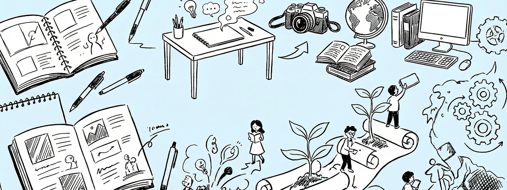
Messageご挨拶
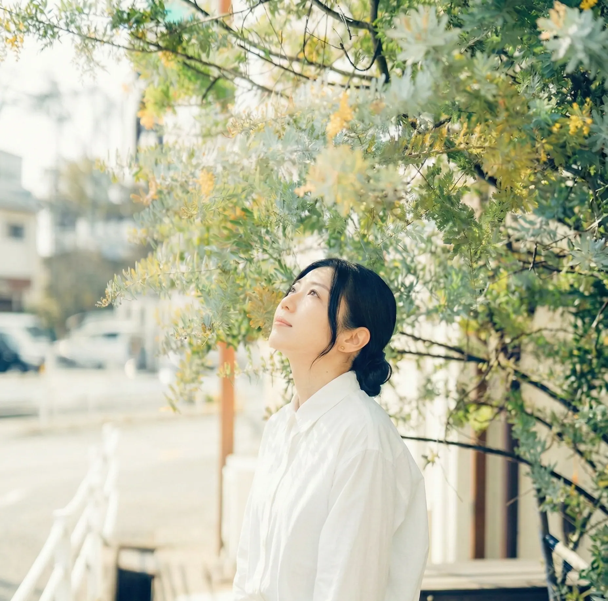
「伝わる」の先にある、「迷わない心地よさ」を。
建設業界やAI関連業務を通じて培った、情報の構造を深く理解し、整理する力。
私はこの「整える力」を軸に、Webデザインと動画制作に向き合っています。
クライアント様の想いの背景までを丁寧に汲み取り、
エンドユーザーが直感的に理解できる、使う人の心に寄り添った表現を追求してまいります。
Features私の性格を表す3つの特徴
-
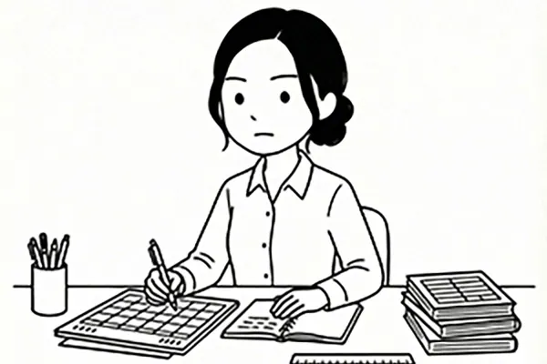
【特徴1：最後まで整える】
制作では、ゴールから逆算して一つずつ整えていくことを大切にしています。途中で投げ出したり、詰めを曖昧にしたまま進めることが苦手です。「一旦ここでいいや」ではなく、「ここまでやったなら、最後まで整えたい」。その積み重ねが、安心感のあるアウトプットにつながっていると感じています。
-
【特徴2：目的ベースで取り入れる】
新しいツールや表現に対して、強い抵抗はありません。ただし「新しいから使う」のではなく、「何のために使うか」を必ず考えます。AIや効率化ツールも、表現を軽くするためではなく、本当に伝えたい部分に時間と集中力を使うための手段として取り入れています。
-
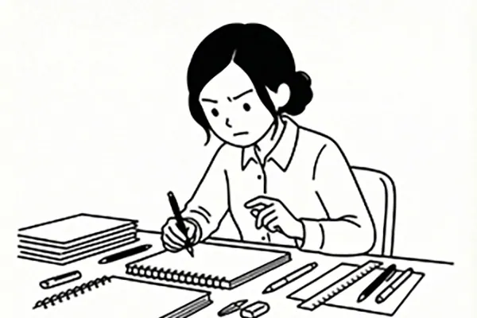
【特徴3：自分の基準を持つ】
制作に入る前に、目的や意図を自分の中で整理する時間を大切にしています。その基準が曖昧なままだと、どれだけ作業を重ねても納得できないからです。一度構成が固まると、集中して作り込むタイプ。安定したアウトプットを求められる場面で力を発揮します。
Career & Values略歴と想い
| 氏名 | 西川 綾乃 |
|---|---|
| 略歴 |
大学を卒業後、医療事務、建築積算、CADオペレーション、一般事務、AIアノテーションなど
多様な職種を経験しました。 社会人としてさまざまな環境で働く中で、情報や状況を整理し、 相手に伝わる形に整えることに自然とやりがいを感じるようになります。 現在はその感覚を活かし、WEBデザインと動画制作を学びながら、 「どうすれば迷わず伝わるか」を軸に表現と向き合っています。 |
大切にしている価値観
-
1. 安心と自由を、
自分の力で設計すること感情や状況に振り回されるのではなく、選択できる余白を持ち続けたい。
経済面・働き方・人間関係においても、「いつでも選べる状態」をつくることを大切にしています。 -
2. 調和を大切にすること
自分の意志を持ちながらも、相手の立場に立つことを忘れない。
利己心と利他心、自由とつながりのバランスを取りながら、心地よい関係を築くことを目指しています。 -
3. 無理なく、長く続けられる
かたちを選ぶこと短期的な成果よりも、持続できる仕組みを。
健康も学びも仕事も「一生続くプロジェクト」と捉え、整えながら前に進む姿勢を大切にしています。
Skillスキル
Word
文書作成、表や画像の挿入
Excel
データの集計・抽出、IF関数
PowerPoint
資料作成、アニメーションの使用
Photoshop
写真の切り抜き・補正・合成、バナー作成
※勉強中
Illustrator
図形の描画、簡単なパス操作、ロゴ・アイコン作成
※勉強中
PremierePro
カット、テロップ、色調整、音声編集
※勉強中
Figma
バナー、チラシ、ワイヤーフレーム作成
※勉強中
Canva
バナー、プレゼン資料、インスタ投稿、サムネイル
WordPress
記事コンテンツ作成、Webサイト構築
HTML/CSS
基礎知識
スプレッドシート・ドキュメント・スライド
AIツール
ChatGPT、Gemini、SUNO AI、NotebookLM、Veo
その他
Slack、Zoom、Discord、Chatwork、Trello、X、Instagram
AutoCAD
簡単な図面修正
SPS
建築積算
Works制作したもの
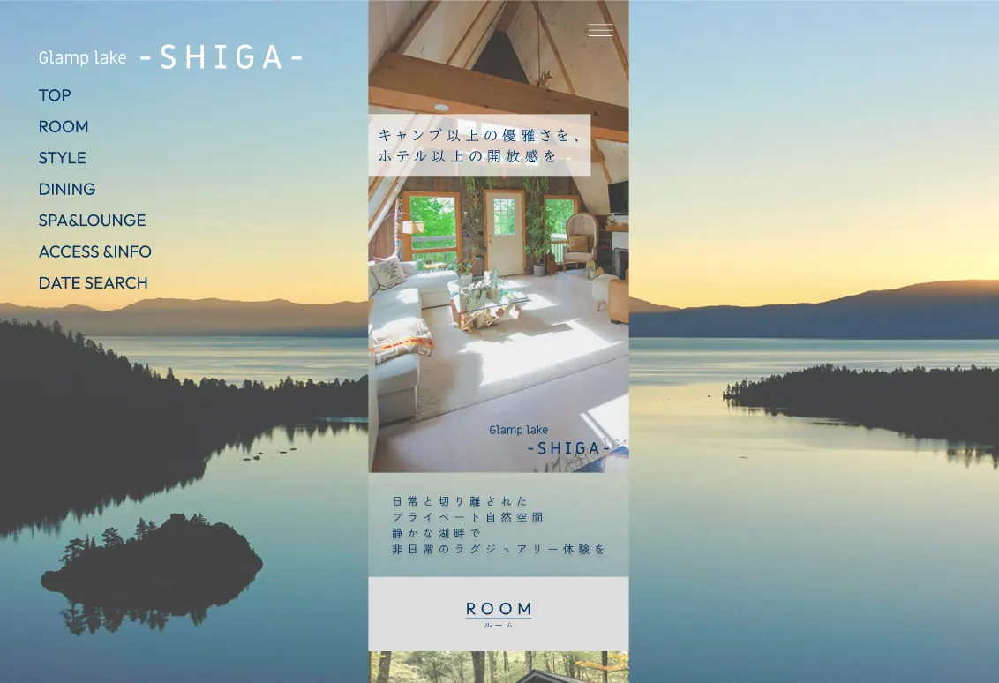
グランピング施設 Webサイト制作
Web Design / Coding
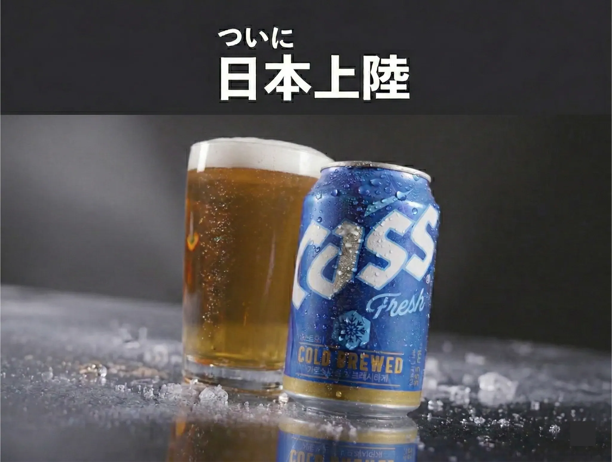
20秒縦型CM制作
Premiere Pro
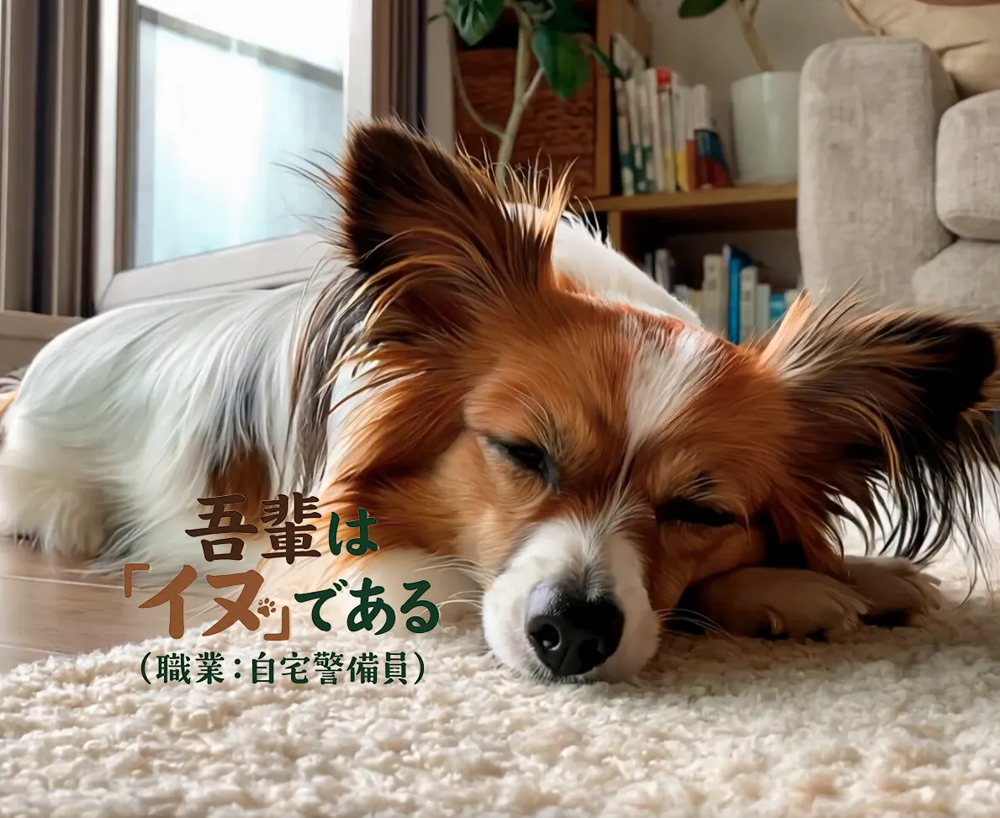
吾輩はイヌである
AI生成ツール / Premiere Pro
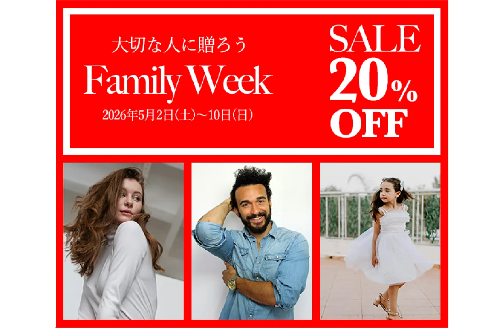
FamilyDayセールバナー
Illustrator Photoshop
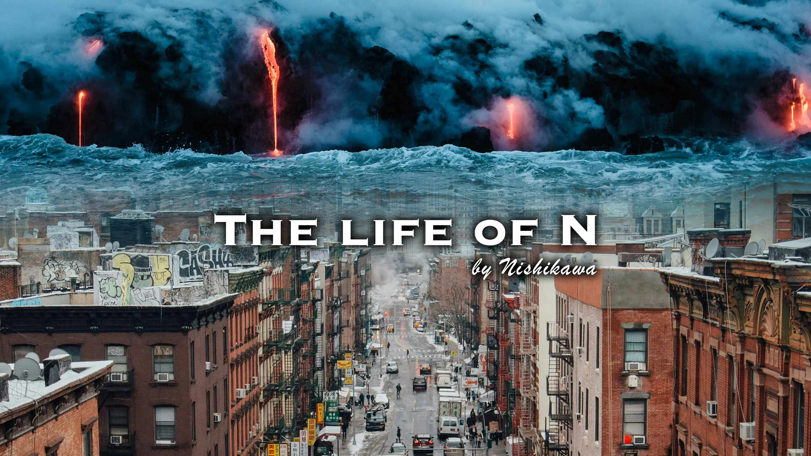
YouTubeチャンネルアート制作
Photoshop
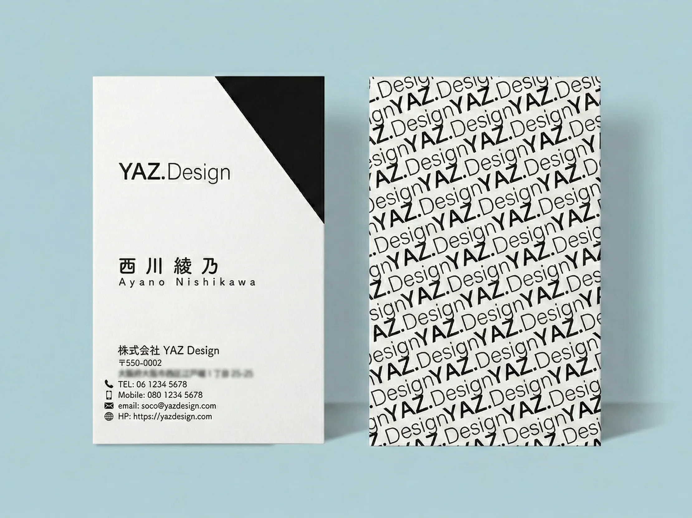
オリジナル名刺
Illustrator
Visionこれからの展望
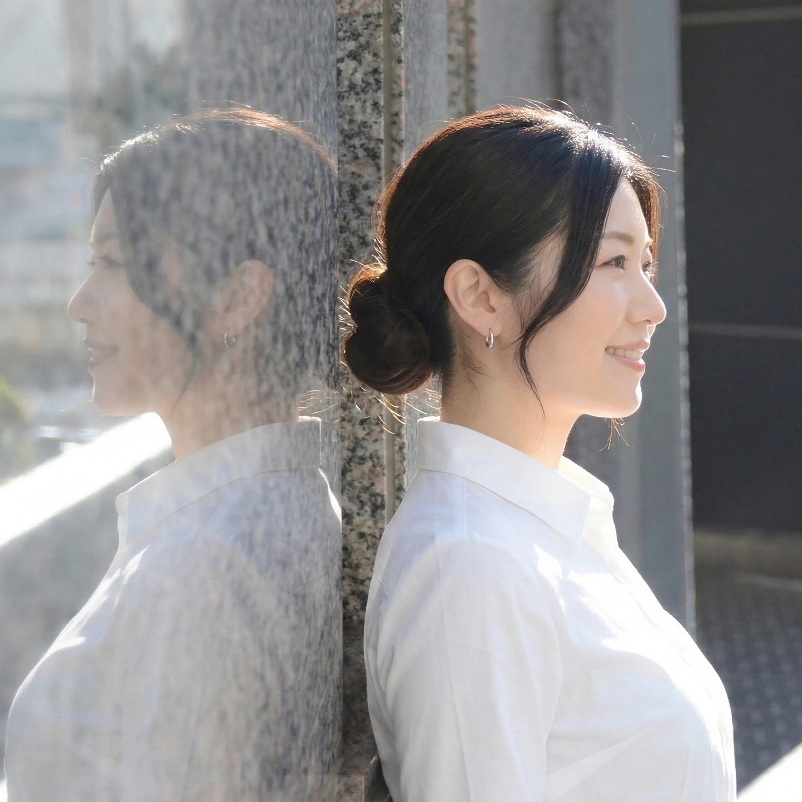
これからは、WEBデザインや動画制作を通して、「伝えたいことが、きちんと伝わる」表現を積み重ねていきたいと考えています。
ご依頼の背景や意図を丁寧に受け取り、見る人・使う人の立場に立って、無理のない形に整える。
そんな関わり方を大切にしたいです。
お仕事としてのご縁はもちろん、考え方や価値観に共感してくださる方との出会いも楽しみにしています。